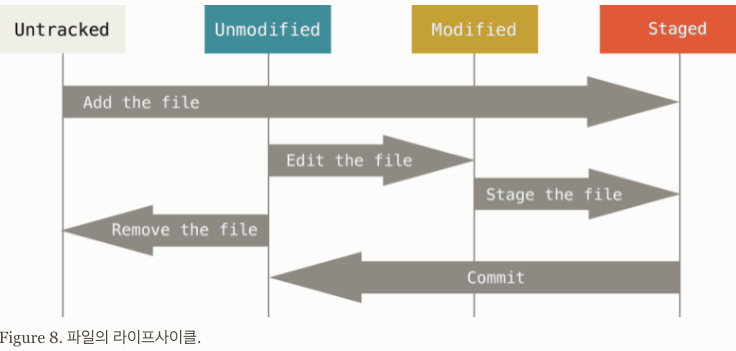

Git에서 file의 개념적인 위치와 상태.
파일의 위치(conceptual location) : Working tree, Stage, Repsitory
Git 이 version 관리를 할 때, 다음과 같은 3가지의 파일이 놓이는 개념적인 공간 (file의 단계라고도 생각할 수 있음)이 존재함.
Working Tree (or Working Directory)
- 파일의 수정, 저장 등의 작업이 이루어지는 곳
- 일반적으로 프로젝트이 루트 디렉토리가 바로 working tree임.
Stage
- Version 관리가 될 파일들이 대기하게 되는 곳
- staging area라고 불림.
Repository
- Version이 할당되어 관리되는 파일들이 있는 곳.
- Stage에 있던 파일들이
commit을 통해 repository로 이동됨.
file들 중에서 stage와 repository에 존재하는 file들이 실제로 .git 디렉토리에 저장이 되게 된다.
File의 Life Cycle
Working directory의 파일은 크게 다음 2가지 상태의 파일로 나눌 수 있다.
- tracked file : version이 할당되어 관리 중 인 파일.
- untracked file : version이 할당되지 않아서 관리가 안 되고 있는 파일.
위의 Tracked file 은 다음의 3가지 상태로 나뉜다.
- unmodifed file : version이 관리가 되는 file이 해당 version의 상태 그대로인 경우.
- modifed file : version이 관리가 되는 file이 변경만 된 상태로 add를 통해 staged 상태로 넘어가기 전 상태임.
- staged file : version이 관리가 되는 file이 변경 후 add되어 commit되기 전 상태.
